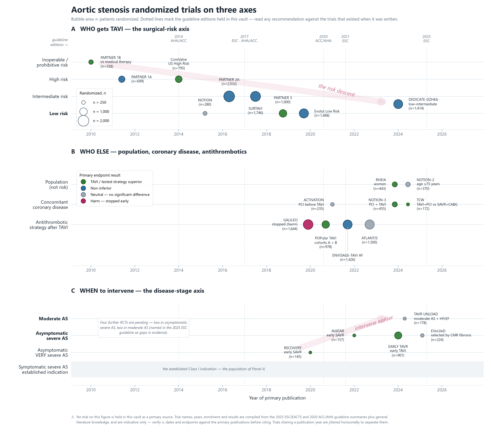

Aortic Stenosis
같은 환자를 세 기준에 넣으면 답이 다릅니다. 가장 크게 갈리는 곳은 무증상 중증 AS(언제 할 것인가)와 SAVR vs TAVI의 나이 기준(무엇으로 할 것인가)입니다.
결정 도구 — 세 기준의 권고를 나란히
값을 바꾸면 바로 갱신됩니다. 사례를 눌러 시작해 보세요.
중증도 — 세 기준은 같은 숫자를 씁니다
중증 AS의 정의는 ASE/EACVI 방법론을 공통으로 물려받아 거의 같습니다. 차이는 "매우 중증"과 중등도의 경계에 있습니다.
| ACC/AHA 2020 | ESC 2025 | KSE 2023 | |
|---|---|---|---|
| 중증 (고압차) | Vmax ≥4.0 m/s 또는 MG ≥40 mmHg · AVA 보통 ≤1.0 cm² (필수 아님) | MG ≥40 · Vmax ≥4.0 · AVA ≤1.0 cm² (≤0.6 cm²/m²) | MG ≥40 · Vmax ≥4.0 (ACC/AHA 병기 사용) |
| "매우 중증" — 무증상에서 중재 기준 | Vmax ≥5.0 m/s (IIa, B-R) | MG ≥60 또는 Vmax >5.0 m/s (IIa, B) | Vmax ≥4.5 m/s — 한국 자료(RECOVERY) 근거 |
| 중등도 | Vmax 3.0–3.9 · MG 20–39 | AVA 1.0–1.5 cm² 또는 MG 25–40 (정상 유량) | 20 ≤ MG <40 · Vmax 3.0–3.9 |
| 저유량 저압차 | D2 (LVEF <50%, DSE) · D3 (LVEF ≥50%, SVi <35) | SVi ≤35 mL/m², LVEF <50% / ≥50%; CT 석회화 점수로 확인 | DSE로 flow reserve 확인, 결론이 안 나면 영상 전문의 협진 |
중재 적응증 비교
색은 권고 등급. 한국(KSE)은 등급 없이 알고리즘으로만 제시합니다.
| 상황 | ACC/AHA 2020 | ESC 2025 | KSE 2023 |
|---|---|---|---|
| 증상 있는 중증 고압차 AS | I (A) | I (B) | AVR |
| 저유량 저압차, LVEF <50% | I (B-NR) — D2 | I (B) — 중증도 확인 후 | DSE flow reserve 있고 고압차로 바뀌면 AVR |
| 저유량 저압차, LVEF ≥50% | I (B-NR) — AS가 증상의 원인일 때 | IIa (B) | 영상 전문의 협진, 추가 검사 |
| 무증상, LVEF <50% | I (B-NR) | I (B) | AVR |
| 무증상, 다른 심장수술 예정 | I (B-NR) | I | AVR |
| 무증상 중증 고압차, 표지자 없음, 저위험 | 권고 없음 — 경과 관찰 | IIa (A) — 경과 관찰의 대안으로 조기 중재 | 경과 관찰 |
| 무증상 + 매우 중증 | IIa (B-R) — Vmax ≥5 | IIa (B) — MG ≥60 / Vmax >5 | AVR — Vmax ≥4.5 |
| 무증상 + BNP >3배 / 빠른 진행 | IIa (B-NR) | IIa (B) — 진행은 석회화 동반 시 | AVR |
| 무증상 + 운동 중 혈압 하강 | IIa (B-NR) — ≥10 mmHg | IIa (C) — >20 mmHg 지속 | AVR (운동 불내성) |
| 무증상 + LVEF 50–55% | IIb — 3회 연속 <60%로 감소 시 | IIa (B) — LVEF <55% | — |
| 중등도 AS + 다른 심장수술 | IIb (C-EO) | IIa (C) | AVR |
가장 큰 차이 — 표지자 없는 무증상 중증 AS에 ESC 2025만 IIa(A)를 줍니다. 근거인 EARLY TAVR(2024)는 ACC/AHA의 문헌 검색 마감(2020년 3월) 이후에 나왔습니다. 의견 차이라기보다 날짜 차이입니다. 한국은 Vmax 기준만 4.5 m/s로 낮췄습니다.
SAVR vs TAVI — 선을 긋는 축이 위험도에서 나이로
세 기준 모두 수술 위험도 대신 나이(기대여명의 대리지표)로 선을 긋지만, 그 나이가 다릅니다.
| SAVR 쪽 | 둘 다 가능 (Heart Team) | TAVI 쪽 | |
|---|---|---|---|
| ACC/AHA 2020 | <65세 또는 기대여명 >20년 · I (A) | 65–80세: SAVR 또는 TF-TAVI · I (A) | >80세 또는 기대여명 <10년: TF-TAVI · I (A) · 고위험/수술불가: TAVI I (A) |
| ESC 2025 | <70세 + 저위험(STS <4%): SAVR · I (B) | 그 외: Heart Team · I (B) | ≥70세 (삼엽판막, 해부학 적합): TAVI · I (A) |
| KSE 2023 | <75세 + STS <4%, 다른 심장수술, 기계판막 선호, TAVR 부적합 | 그 외: Heart Team | ≥75세 또는 STS ≥8%, 수술 불가 |
KSE는 ESC 2021의 75세 체계를 택했습니다(본문은 ACC/AHA를 인용). 이후 ESC는 2025년에 70세로 내렸습니다. 이엽판막: ESC는 수술 위험이 높을 때만 TAVI IIb(B), KSE와 ACC/AHA도 SAVR이 더 적절하다고 봅니다. 무증상 + 표지자로 중재할 때 ACC/AHA는 SAVR을 TAVI보다 우선(I, B-NR)합니다.
근거 — 무작위 임상시험의 지형
A: 위험도 하강 (수술불가 2010 → 저위험 2019) · B: 위험도 밖의 질문 · C: 언제 할 것인가 (무증상·중등도 AS)

한국 자료 — RECOVERY(Kang 2020, NEJM)는 무증상 매우 중증 AS(Vmax ≥4.5 또는 MG ≥50)에서 조기 SAVR이 수술·심혈관 사망을 줄인 한국 RCT입니다(HR 0.09). KSE의 4.5 m/s 기준이 여기서 나왔습니다. 2019 한국 레지스트리에서 중증 AS 중재의 39%가 TAVR였고, 병원 내 사망률은 보존적 치료 8.1% · SAVR 4.1% · TAVR 1.1%(보정 전)였습니다.
출처
2020 ACC/AHA VHD guideline (Circulation 2021;143:e72) · 2025 ESC/EACTS VHD guideline (Eur Heart J 2025) · 2023 KSE position paper Part I: aortic valve disease (J Cardiovasc Imaging 2024;32:11) · Korean Valve Survey (J Cardiovasc Imaging 2024;32:37). 이 사이트의 판별 표는 가이드라인 변천에.